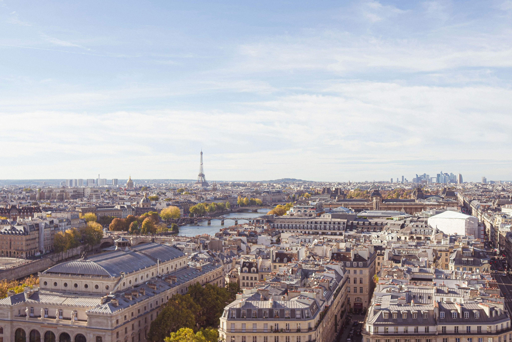

Terre de France
An Earth Science project on the The Geophysical processes that shape France.

Brief Overview of France
Historically: France has been shaped by waves of settlement and rule — from Roman Gaul and medieval kingdoms to the French Revolution of 1789, which reshaped not just France but the political landscape of the modern world. Its long history as a unified nation-state has left a dense layer of architecture, art, and institutions still visible today (Encyclopaedia Britannica, n.d.-a).
Culturally: France is known for its contributions to art, philosophy, cuisine, and fashion, and for a strong regional diversity. Areas such as Brittany, Provence, Alsace, and Corsica each carry distinct languages, foods, and traditions within one country (Encyclopaedia Britannica, n.d.-b).
Socially: France is a republic built around the ideals of liberté, égalité, fraternité (liberty, equality, fraternity), with a strong tradition of civic life, public education, and social services (Élysée, n.d.).
Economically: France is one of the largest economies in Europe, with major industries in agriculture, aerospace, luxury goods, tourism, and nuclear energy. Its geography plays a direct role here too: fertile river basins support agriculture, mountain ranges support hydropower and winter tourism, and long coastlines support fishing, shipping, and beach tourism (Encyclopaedia Britannica, n.d.-c).
Explore the Earth Processes
Maps & Cartography
How France has been measured, projected, and mapped.
Plate Tectonics
The tectonic forces behind the Alps, Pyrenees, and Massif Central.
Weathering & Erosion
How rock and soil break down and move across the landscape.
Fluvial & Coastal Processes
Rivers like the Seine and Rhône, and France's Atlantic and Mediterranean coasts.
Climate & Biomes
The climate zones and ecosystems found across French regions.